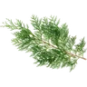
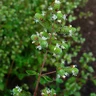

Correspondence Grimoire
Coughs

Cypress Essential Oil
Marjoram Essential OilCoughs: a reflexive expulsion of air from the lungs, used to clear irritation, mucus, or foreign matter from the airways.
Definition
A cough is a sudden, forceful expulsion of air from the lungs through the throat and mouth, triggered by irritation of the airway lining. Coughs may be dry (unproductive) or wet (productive of mucus), and may stem from infection, allergy, irritants, post-nasal drip, asthma, bronchitis, catarrh, or chronic conditions. Treatment depends on the cause; aromatherapy supports comfort, expectoration, and respiratory ease.
Indicated Oils
 Angelica Root Essential Oil
Angelica Root Essential Oil Star Anise Essential Oil
Star Anise Essential Oil Anise Essential Oil
Anise Essential Oil Copaiba Balsam Essential Oil
Copaiba Balsam Essential Oil Peru Balsam Essential Oil
Peru Balsam Essential Oil Tolu Balsam Essential Oil
Tolu Balsam Essential Oil Basil Essential Oil
Basil Essential Oil Benzoin Absolute
Benzoin Absolute Borneol Essential Oil
Borneol Essential Oil- Cabreuva Essential Oil
 Cajeput Essential Oil
Cajeput Essential Oil Camphor Essential Oil
Camphor Essential Oil Caraway Essential Oil
Caraway Essential Oil Cascarilla Bark Essential Oil
Cascarilla Bark Essential Oil Atlas Cedarwood Essential Oil
Atlas Cedarwood Essential Oil Eucalyptus Essential Oil
Eucalyptus Essential Oil Broad-Leaved Peppermint Eucalyptus Essential Oil
Broad-Leaved Peppermint Eucalyptus Essential Oil Silver Fir Templin Essential Oil
Silver Fir Templin Essential Oil Ginger Essential Oil
Ginger Essential Oil Hyssop Essential Oil
Hyssop Essential Oil Rock Rose Essential Oil
Rock Rose Essential Oil- Marjoram Essential Oil
 Myrrh Oil
Myrrh Oil Niaouli Essential Oil
Niaouli Essential Oil Black Pepper Essential Oil
Black Pepper Essential Oil Longleaf Pine Essential Oil
Longleaf Pine Essential Oil Scotch Pine Essential Oil
Scotch Pine Essential Oil Cabbage Rose Absolute
Cabbage Rose Absolute- Rose Otto Oil
 Rosemary Essential Oil
Rosemary Essential Oil Clary Sage Essential Oil
Clary Sage Essential Oil- Spanish Sage Essential Oil
 Hemlock Spruce Essential Oil
Hemlock Spruce Essential Oil Tea Tree Essential Oil
Tea Tree Essential Oil
Chronic Coughs
Persistent coughs lasting more than three weeks, often stemming from chronic bronchitis, asthma, post-nasal drip, GERD, recurrent catarrh, or smoking-related airway changes. Aromatherapy supports respiratory ease, soothes the irritated airway lining, and helps loosen lingering congestion. Indicated application methods are massage, vaporization, and steam inhalation (M, V, I).
Indicated Oils
 Lemon Balm Essential Oil
Lemon Balm Essential Oil Canadian Balsam Essential Oil
Canadian Balsam Essential Oil Costus Essential Oil
Costus Essential Oil Cubeb Essential Oil
Cubeb Essential Oil- Cypress Essential Oil
 Elecampane Essential Oil
Elecampane Essential Oil Elemi Essential Oil
Elemi Essential Oil Frankincense Essential Oil
Frankincense Essential Oil Galbanum Essential Oil
Galbanum Essential Oil Helichrysum Essential Oil
Helichrysum Essential Oil Hops Essential Oil
Hops Essential Oil- Hyssop Essential Oil
 Jasmine Absolute
Jasmine Absolute Peppermint Essential Oil
Peppermint Essential Oil Spearmint Essential Oil
Spearmint Essential Oil- Myrrh Oil
- Myrtle Essential Oil
 Sandalwood Essential Oil
Sandalwood Essential Oil Levant Storax Essential Oil
Levant Storax Essential Oil
Application Methods
- Massage: Dilute 2 to 3 drops in 5 ml of carrier oil and massage gently into the chest, throat, upper back, and shoulders. Use slow upward strokes toward the heart.
- Vaporizer/Diffuser: Add 4 to 6 drops to a diffuser or vaporizer to ease airway irritation, soothe spasmodic coughing, and support restful breathing.
- Inhalation: Add 2 to 3 drops to a bowl of hot (not boiling) water, drape a towel over the head, and inhale steam for 5 to 10 minutes. A drop on a tissue or pillow at night also helps suppress nighttime coughing.
Suggested Blends
- Soothing Chest Rub: Frankincense (3 drops) + Sandalwood (2 drops) + Hyssop (2 drops) + Lavender (3 drops) in 30 ml carrier oil.
- Productive Cough Steam: Eucalyptus (2 drops) + Pine (1 drop) + Myrrh (1 drop) in a bowl of steaming water.
- Dry Cough Diffuser: Sandalwood (3 drops) + Cabbage Rose (1 drop) + Benzoin (2 drops).
- Nighttime Pillow Drop: Marjoram (1 drop) + Lavender (1 drop) on a tissue beside the pillow.
- Spasmodic Cough Massage: Clary Sage (3 drops) + Cypress (2 drops) + Roman Chamomile (2 drops) in 15 ml carrier oil for chest and throat.
Cross-References
- See Bronchitis for inflammation of the bronchial tubes.
- See Catarrh for excess mucus production.
- See Asthma for spasmodic respiratory conditions.
- See Anti-Tussive for the broader herbal action category.
- See Bechic for cough-relieving substances.